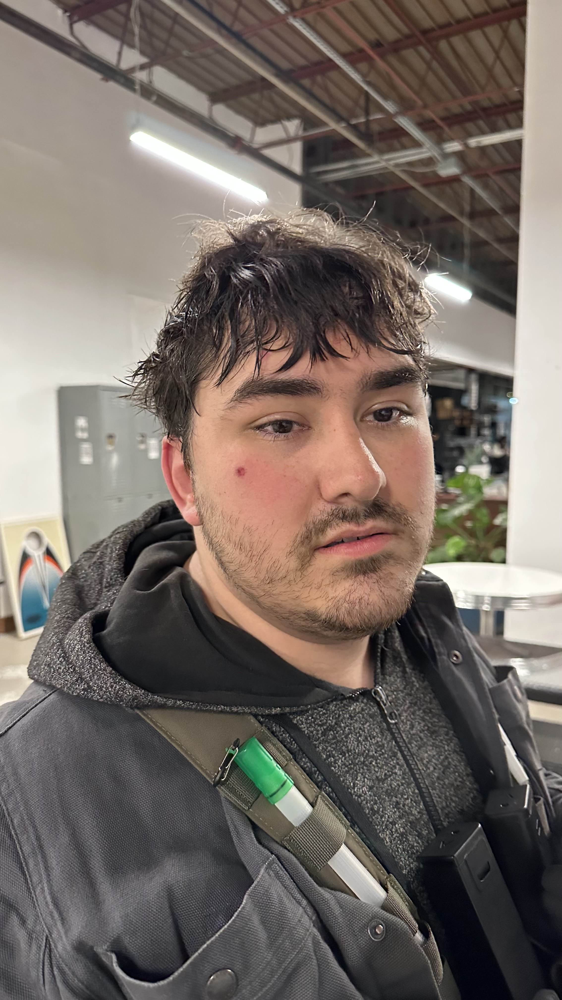

Zack is honored to be surrounded by a band of loyal brothers and steadfast friends. Each of these gentlemen has played a pivotal role in his life, offering support, laughter and plenty of unforgettable adventures. Get to know the groomsmen who will be standing alongside him on this special day.

TylerCo-Best Man & Brother

NickCo-Best Man & Brother

DakotaGroomsman

SebbyGroomsman

MattGroomsman

BraydenGroomsman